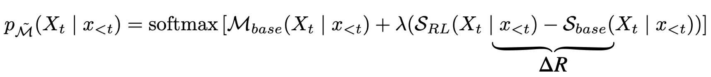

This project introduce RAST, a simple yet effective inference-time strategy that activates reasoning capabilities in LLMs by transferring logit-level adjustments from smaller RL-tuned models. Our paper begins with a key hypothesis as follows:
To test our hypothesis, we conduct a preliminary study using base LLM to do next token prediction when given prefix generated by the RL model, we found that there is a large path coverage rate, indicating that only a small set of tokens are different on the decoding path acorss model scales. In particular, the different tokens reflect certain reasoning behaviours, including (i) branching out, (ii) backtracking, and (iii) self-verification.
SRL and Sbase to guide Mbase.
ΔR from larger RL models (e.g., 14B) leads to better reasoning performance, showing that delta logits encode richer reasoning signals.ΔR from 7B) may hinder transfer effectiveness.
k, enabling broader exploration and higher chances of capturing correct answers.
@misc{ouyang2024structured,
title={Reasoning Activation in LLMs via Small Model Transfer},
author={Siru Ouyang and Zhuosheng Zhang and Bing Yan and Xuan Liu and Yejin Choi and Jiawei Han and Lianhui Qin},
year={2025},
eprint={2311.09656},
archivePrefix={arXiv},
primaryClass={cs.CL}
}